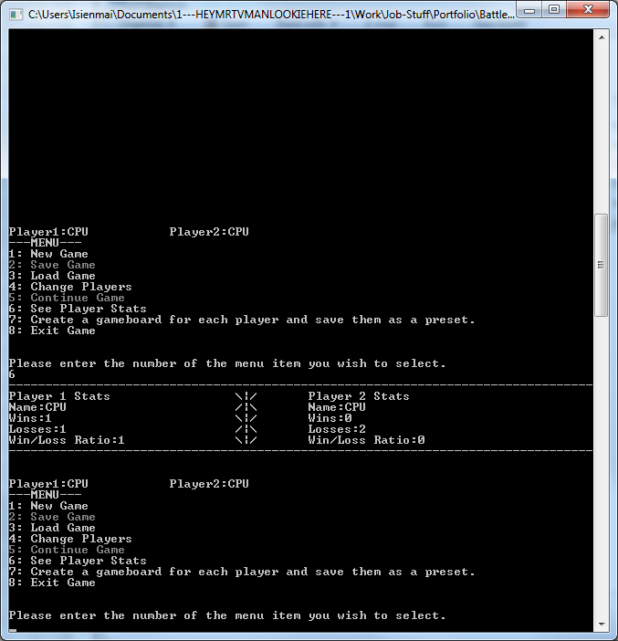
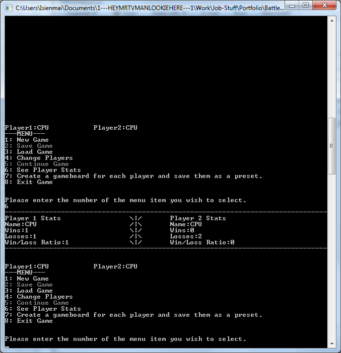

During first year of Uni, after being re-taught the fundamentals of programming we were given the task to create a playable version of the game Battleships that ran in a console window. This was to be programmed in C# as this was the language that was being taught at the time. In the final version you can play locally against a friend, play against an AI opponent, or have two AIs play against each other. On start the game allows you to place your ships wherever you like, or use a pre-existing layout. You can also create these pre-existing layouts yourself. The game saves each players wins/losses by username in a text file so you can keep track of, well, wins and losses across multiple gameplay sessions. It also includes game saving/loading functionality to allow you to pause and come back to a game in progress.
 
Source

Source